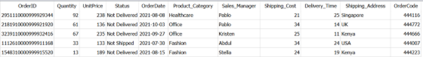
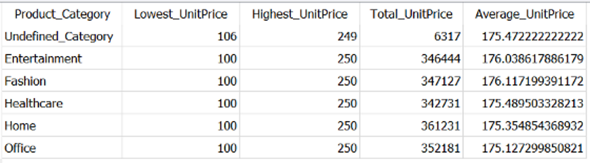

Below is a comprehensive rewrite of the original article. All information has been retained, but the wording and flow have been adjusted for clarity and uniqueness.
How to Use GROUP BY Clause in SQL | Towards Data Science
From simple to more advanced GROUP BY scenarios, all under 10 minutes
SQL (Structured Query Language) is a widely used tool for retrieving and transforming data stored in relational databases. A key aspect of data transformation is aggregation, and to properly aggregate data, understanding the GROUP BY clause is essential.
In SQL, the GROUP BY clause is typically used alongside aggregate functions such as SUM(), MIN(), MAX(), AVG(), and COUNT(). When you apply these aggregate functions to a column, the results represent the calculated value for that particular group of rows.
This article provides five practical examples of how to use the GROUP BY clause in SQL queries. By the end of these examples, you’ll be able to apply the GROUP BY clause in a variety of scenarios with confidence.
For demonstration, we’re using SQLite DB Browser with a self-created Sales Data generated using the Faker Python library. This dataset, available on GitHub under the MIT License, has 9999 rows and 11 columns, structured as shown below:
 Dummy sales dataset | Image by Author
Before proceeding, it’s important to remember this rule when using GROUP BY:
When you use
GROUP BYin a SQL query, each column in theSELECTstatement must appear either in theGROUP BYclause or within an aggregate function.
Let’s start with the simplest example and gradually move to more advanced ones.
This is the most common usage scenario, where you apply an aggregate function to one or more columns. The GROUP BY clause groups rows based on the specified columns, and the aggregate function calculates a value for each group.
For instance, suppose we want to get a statistical summary of the UnitPrice for each Product_Category. We’ll use all aggregate functions in the example:
SELECT
Product_Category,
MIN(UnitPrice) AS Lowest_UnitPrice,
MAX(UnitPrice) AS Highest_UnitPrice,
SUM(UnitPrice) AS Total_UnitPrice,
AVG(UnitPrice) AS Average_UnitPrice
FROM Dummy_Sales_Data_v1
GROUP BY Product_Category;
Data Aggregation in SQL | Image by Author
SELECT list and is also the column we’re grouping by.MIN, MAX, SUM, AVG).Notice the first row has NULL for Product_Category. According to the Microsoft documentation:
“If a grouping column contains NULL values, all NULL values are considered equal and they are collected into a single group.”
By default, these NULL values appear at the top when sorting in ascending order. If you want to replace NULL with a more meaningful label in the output, you can use the COALESCE function:
SELECT
COALESCE(Product_Category, 'Undefined_Category') AS Product_Category,
MIN(UnitPrice) AS Lowest_UnitPrice,
MAX(UnitPrice) AS Highest_UnitPrice,
SUM(UnitPrice) AS Total_UnitPrice,
AVG(UnitPrice) AS Average_UnitPrice
FROM Dummy_Sales_Data_v1
GROUP BY Product_Category;

Handling NULL Values in GROUP BY | Image by Author
Important: Although we used
COALESCEon theProduct_Categorycolumn, we did not aggregate this column. Thus,Product_Categorystill needs to be listed in theGROUP BYclause.
You can apply as many aggregate functions as you need, as long as you ensure that non-aggregated columns appear in the GROUP BY clause.
While GROUP BY is usually used with aggregate functions, you can also use it without them to find unique rows.
For example, let’s say you want to retrieve all unique combinations of Sales_Manager and Product_Category:
SELECT
Product_Category,
Sales_Manager
FROM Dummy_Sales_Data_v1
GROUP BY
Product_Category,
Sales_Manager;
 Using GROUP BY without Aggregate Functions | Image by Author
Using GROUP BY without Aggregate Functions | Image by Author
Some might note that you can achieve the same result using the DISTINCT keyword. However, there are two main reasons why GROUP BY can be preferable:
GROUP BY are automatically returned in ascending order based on the grouped columns.JOINs, DISTINCT can be expensive. In contrast, GROUP BY is often more efficient in such cases.You can read more about interesting use cases of GROUP BY in other articles, but let’s move on to filtering grouped results.
In SQL, HAVING works similarly to WHERE, but it filters groups rather than individual rows.
Example 1: Filtering on Non-Aggregated Columns
Imagine you want to get unique records of Product_Category, Sales_Manager, and Shipping_Cost where the Shipping_Cost is greater than or equal to 34. You could do this using either WHERE or HAVING:
-- Using WHERE clause
SELECT
Product_Category,
Sales_Manager,
Shipping_Cost
FROM Dummy_Sales_Data_v1
WHERE Shipping_Cost >= 34
GROUP BY
Product_Category,
Sales_Manager,
Shipping_Cost;
-- Using HAVING clause
SELECT
Product_Category,
Sales_Manager,
Shipping_Cost
FROM Dummy_Sales_Data_v1
GROUP BY
Product_Category,
Sales_Manager,
Shipping_Cost
HAVING Shipping_Cost >= 34;
 Same output from WHERE and HAVING in GROUP BY | Image by Author
Same output from WHERE and HAVING in GROUP BY | Image by Author
Both queries give the same result, but they operate differently:
WHERE is applied before GROUP BY, so it checks the entire dataset for Shipping_Cost >= 34.HAVING is applied after GROUP BY, so it filters already grouped rows, making it potentially more efficient.Example 2: Filtering on Aggregated Columns
Suppose you want each combination of Product_Category and Sales_Manager where the total Shipping_Cost is more than 6000. In this case, you need to filter on SUM(Shipping_Cost), which cannot be done in the WHERE clause. Instead, you use HAVING:
SELECT
Product_Category,
Sales_Manager,
SUM(Shipping_Cost) AS Total_Cost
FROM Dummy_Sales_Data_v1
GROUP BY
Product_Category,
Sales_Manager
HAVING SUM(Shipping_Cost) > 6000;
(Image:6.png)
Using HAVING with Aggregated Columns | Image by Author
Because Shipping_Cost is aggregated, it is not listed in the GROUP BY clause; only Product_Category and Sales_Manager are. Once the rows are grouped, HAVING checks whether each group’s total cost exceeds 6000.
Note: Because
HAVINGis evaluated before theSELECTlist is finalized, you cannot directly use column aliases (likeTotal_Cost) within theHAVINGclause.
By default, GROUP BY orders records in ascending (alphabetical) order according to the grouped columns. However, if you want to sort by your aggregated columns or in a specific sequence, you use ORDER BY.
Continuing the previous example, let’s say you want to sort by Total_Cost in descending order:
SELECT
Product_Category,
Sales_Manager,
SUM(Shipping_Cost) AS Total_Cost
FROM Dummy_Sales_Data_v1
GROUP BY
Product_Category,
Sales_Manager
ORDER BY
Total_Cost DESC;
(Image:7.png)
Using ORDER BY DESC on an Aggregated Column | Image by Author
Here, Product_Category and Sales_Manager are no longer in ascending order because we have not specified them in the ORDER BY clause. If you want those columns in ascending order while keeping Total_Cost in descending order, list them all in ORDER BY with the desired sorting:
SELECT
Product_Category,
Sales_Manager,
SUM(Shipping_Cost) AS Total_Cost
FROM Dummy_Sales_Data_v1
GROUP BY
Product_Category,
Sales_Manager
ORDER BY
Product_Category,
Sales_Manager,
Total_Cost DESC;
(Image:8.png)
Sorting by Multiple Columns in Different Orders | Image by Author
This query will display:
Product_Category and Sales_Manager in ascending order.Total_Cost in descending order.Key Takeaway: You can mix ascending and descending orders for different columns in the same
ORDER BYclause. The order in which you list these columns in the clause changes the final sorting.
To understand how all these clauses work together, consider this scenario:
Status = 'Not Delivered').Sales_Manager and Product_Category where the total Shipping_Cost in that category is more than 1600.Follow these steps:
WHERE Status = 'Not Delivered'.GROUP BY Sales_Manager, Product_Category.HAVING SUM(Shipping_Cost) > 1600.The resulting query:
SELECT
Sales_Manager,
Product_Category,
SUM(Shipping_Cost) AS Total_Cost
FROM Dummy_Sales_Data_v1
WHERE Status = 'Not Delivered'
GROUP BY
Sales_Manager,
Product_Category
HAVING SUM(Shipping_Cost) > 1600;
(Image:9.png)
Combining WHERE, GROUP BY, and HAVING | Image by Author
The result shows unique Sales_Manager and Product_Category pairs that meet both conditions. Notice how the rows appear in ascending order for both columns in the final output—this is the default ordering behavior of GROUP BY.
That covers the GROUP BY clause in SQL with five practical examples:
Key points to remember:
GROUP BY, each column in the SELECT must either be aggregated or listed in the GROUP BY.HAVING is used to filter groups (based on aggregate conditions) while WHERE is used to filter individual rows.ORDER BY and can apply multiple columns in both ascending and descending orders.With these examples in hand, you should have a solid grasp on how to effectively use GROUP BY in a variety of real-world data analysis scenarios. Happy querying!